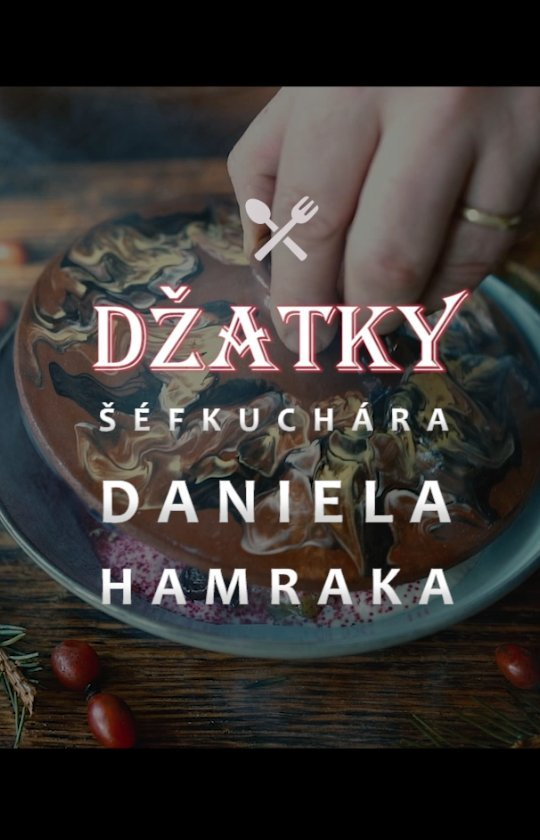

Džatky podľa @daniel.hamrak — Normy Jedál
Táto pandémia trvá už príliš dlho, a tak som si skratil tie dlhé dni nápadom, že vám prinesiem na obrazovky niečo z mojej kuchyne a to môj rukopis,, Džatky,, ktoré prezentujú lokálnosť, tradíciu a moju inováciu. Slovo dalo slovu a s @umelecke.videa.ewelin sme dali dokopy toto nádherné video.
.
#popupdinner#personalchef#chefsecrets#dzatky#džatky#slovakiachef#slovakiafood#slowfood#slovakiaexperience#slovenskejedlo